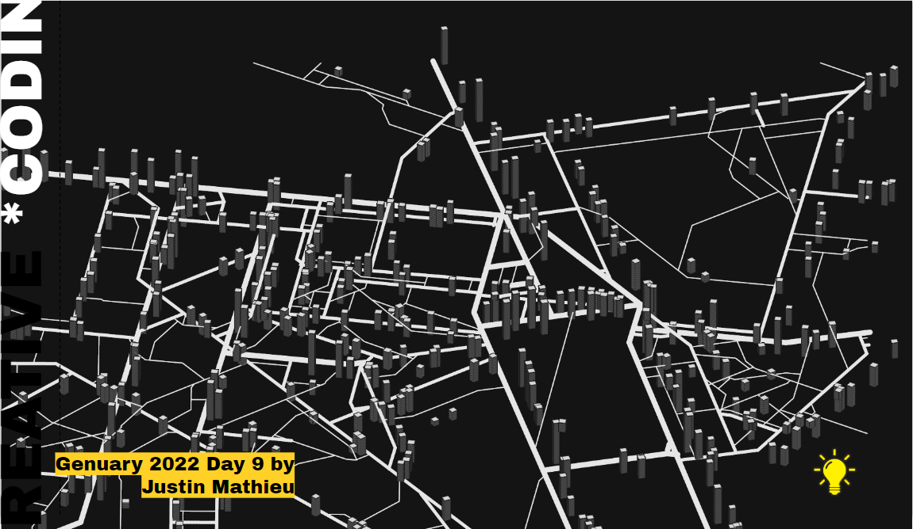

Experiment 3 - Generative Methods
Imitate
Originally I was attempting to imitate a fractal using recursion, but it was not turning out how I wanted, so I asked chat gpt to make a random noise map which turned out looking pretty cool, it simply mapped x and y to black and white on the canvas. The main takeaway from this part of the experiment is that I would end up using the noise and map functions in order to create something.
Integrate
After creating the basic noise map I wanted to apply the generation techniques to something that created something like a building. This work specifically was something that I had in mind when making the final product.
The technique that I have integrated from this project is the way they make the buildings appear 3D (or atleast the way I inferred). I had a series of squares stack on top of eachother in order to make building like structures.
Innovate
At this point in the project I had buildings that were being given a randomly generated height, but they had not actually applied any of the generative methods that were introduced in class, at first I experimented with having noise values for the heights of the buildings but it did not result in anything interesting. But then I applied the noise function to the width of the buildings and it created ended up creating a really cool totem-like structure. The only problem is that since I was using a 1D noise function every totem was appearing the same, to alleviate that I made the noise a 3D function applying the x, y, and i of each building layer to create the totems.
Additionally I decided to randomize the color of the totems each time the programn starts just for some visual flair. At this point I had a final product I was happy with, I had the building like structure seen in Genuary, but I also had applied a twist of my own by applying noise to the construction of each structure.
Reflection
I worked on this project by myself.
- I learned a lot about how noise works and how to apply it to projects, originally I did not really understand how it works it just seemed like a random number generator.
- Additionally I learned about the map function which works very well in conjunction with the noise function and how to specifically apply it.
- I think the high point of this project was realizing I can apply the noise to the width of the squares that make up my building in order to make totems.
- The low point of this project was probably trying to create a fractal using recursion, im not sure why but everytime I tried to actually apply some sort of fractal it would end up just being a line. It was pretty frustrating trying to make recursion work, which is something I tend to struggle with in any sort of programming context.